Agents Analytics Dashboard¶
Overview¶
The Agents Analytics Dashboard offers a unified and comprehensive tool for tracking and analyzing the performance of the deployed agents and their specific versions within your account.
It provides valuable insights into metrics such as successful or failed agent runs, Average Response Times (ART) to requests, and event-based node executions for all node types. Learn more about managing nodes in an agent flow.
Key metrics are displayed intuitively using visually engaging graphs and dynamic widgets, which update based on the selected filters.
Key Features
-
Global timeline Filters provide a comprehensive view of performance across all agents in your account. Learn more.
-
Agent Performance Filters offer a detailed analysis of individual runs, response times, and node executions during the selected period for the selected agent and version. Learn more.
-
An expanded view of analytics widgets include filters to customize data display. Learn more.
- Hovering over a data point on the dynamic and interactive line graph reveals the real-time information for that specific period, providing a focused view of agent performance.
- You can obtain hourly performance analysis for an agent on a specific day or review daily performance trends when selecting a date range filter.
-
Click the Refresh icon shown below to ensure you have the latest dashboard data available to make informed decisions. 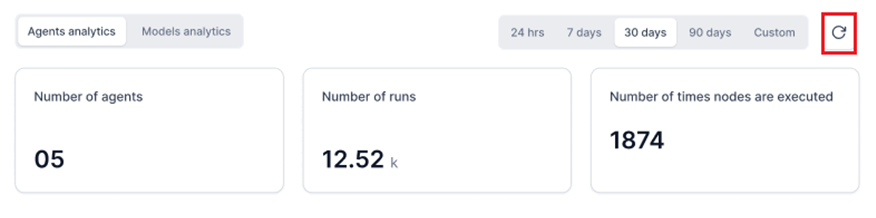
-
The dashboard offers Tooltip support for each widget to get quick summaries of the monitored metrics.
- You can analyze nodes execution data for an agent based on the rate limit subscription for your account. Learn more.
{kind=link}
Best Practices
- Make data-driven decisions by tracking runs and response times for all and specific agents in the selected period.
- Analyze event-based node executions to track node types, execution frequency, and total events processed.
- Apply time-based filters at both global and widget levels for focused and accurate analysis.
- Compare agent performance over time by analyzing successful versus failed runs, and identifying failure patterns.
- Prioritize node execution based on rate limits subscription for your account.
Navigate to the Agents Analytics Dashboard¶
To access the Agents Analytics dashboard, follow the steps below:
- Navigate to the Settings Console.
- On the left menu, select Monitoring > Analytics.
- Click the Agents Analytics tab on the right-hand side screen. 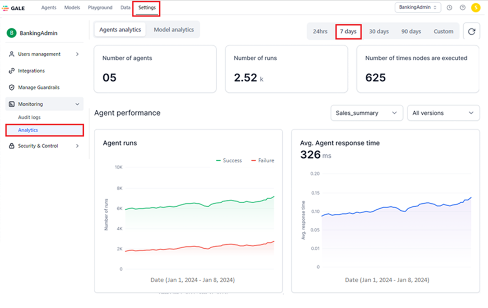
{kind=link}
The system loads the Agents Analytics dashboard with data for the last 7 days, which is the default time range selection. You can select the required period to generate data.
Key Performance Metrics¶
The Agents Analytics Dashboard supports the following account and agent-specific metrics to provide actionable insights.
Account-Level Metrics¶
The following metrics summarize the counts for agents, runs, and node executions at your account level:
-
Number of agents: The total number of agents deployed within your account during the selected period. This includes agents and all their versions managed by all the users of your account.
To view data for a specific agent and its version deployed in your account, use the Agent Performance filters. Learn more.
-
Number of runs: The total count of success and failure agent flow runs or node executions completed by all deployed agents in your account during the specified period.
For detailed statistics on each status for the selected date/date range, see the Agent Runs widget. Learn more.
-
Number of times nodes are executed: The event-driven execution counts for different node types during an agent run.
For detailed statistics on the total events and the runs executed by each node, see the Nodes Execution widget. Learn more.
Note
Hover over the "i" icon to view the information summary for the metric.
{kind=link}
To generate and view the required agent analytics data, use the Global Timeline Filters. Learn more.
Agent-specific Metrics¶
The following metrics help analyze the performance of the selected agent and version in your account during the selected period:
- Agent Runs: Depicts the success and failure trends of the agent flow runs the selected agent version executes.
- Avg. Agent Response Time: Displays the selected agent version’s ART to the requests received during the selected period.
- Nodes Execution: Displays the event-based node execution graph for all the node types on a single day or across the selected date range. Nodes are executed up to the rate limit threshold subscription for your account.
To view the required data, use the Global Timeline Filters and Agent Performance Filters.
Global Timeline Filters¶
To generate account-level and agent-level data for a specific period, use the following options on the top panel:
- 24 hours: Displays agent data for all the hours in the past day.
- 7 days: Displays agent data for all the days in the past week.
- 30 days: Displays agent data for all the days in the past month.
- 90 days: Displays agent data for all the days in the past three months.
- Custom: Allows you to select a custom day or date range from the following calendar widget to view agent data. Once you select the required period, click Apply to see the relevant data. 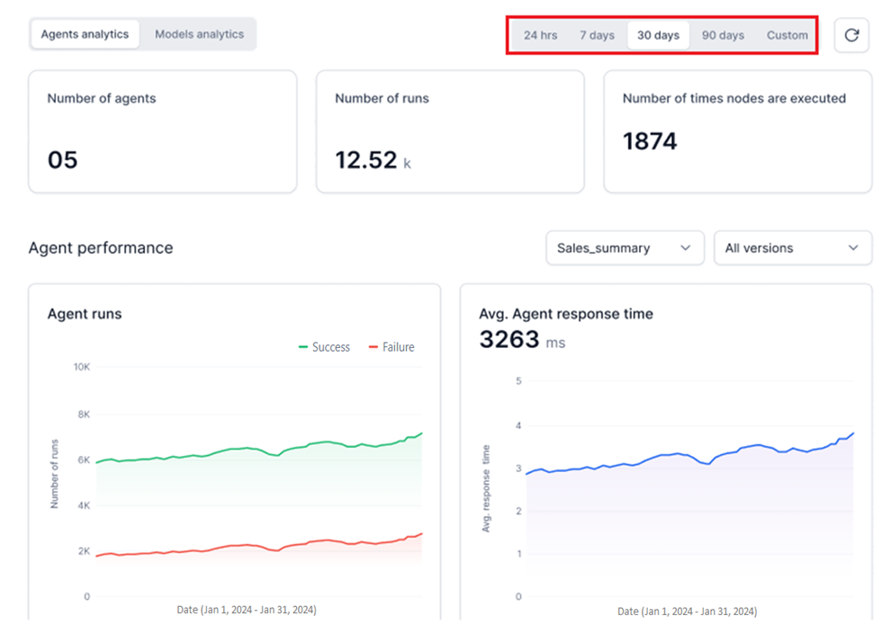
{kind=link}
Key Considerations
- You can select only the current and past dates and not a future date.
- You can view past data only up to one year from the current date.
Single Date
To select a single day, click the required date on the widget. 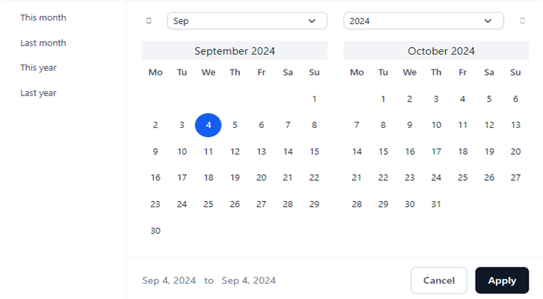
{kind=link}
Date Range
To select a custom date range, select the start and end dates on the widget. 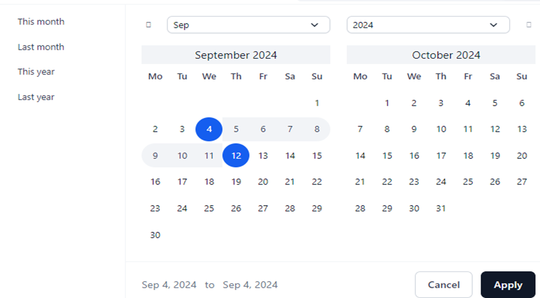
{kind=link}
Note
- Only consecutive dates can be selected for a date range. For example, alternate or random date selections are not allowed.
- Multiple date range selections are not supported.
The other options you can select include:
-
This Month: Displays data for the current month. For example, if today is 20 September, the data from 1 September to 20 September is displayed. 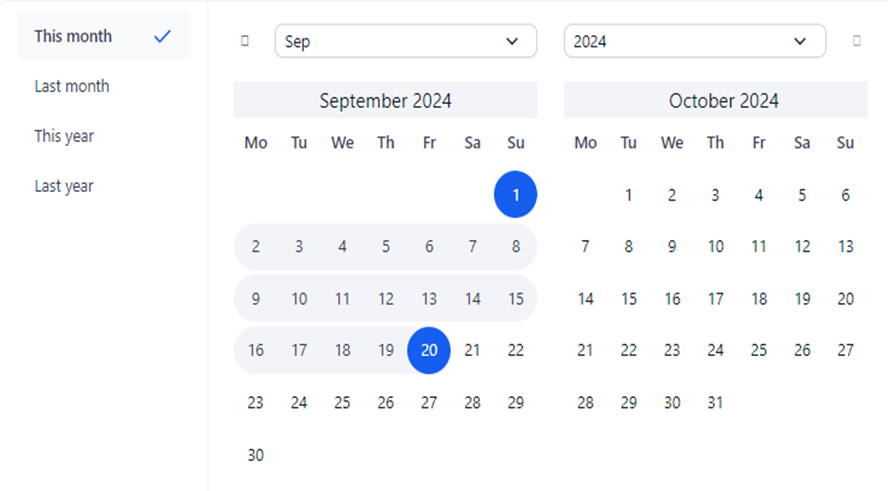
-
Last Month: Displays data for the past month. For example, if this month is September, the data from 1 August to 31 August is displayed. 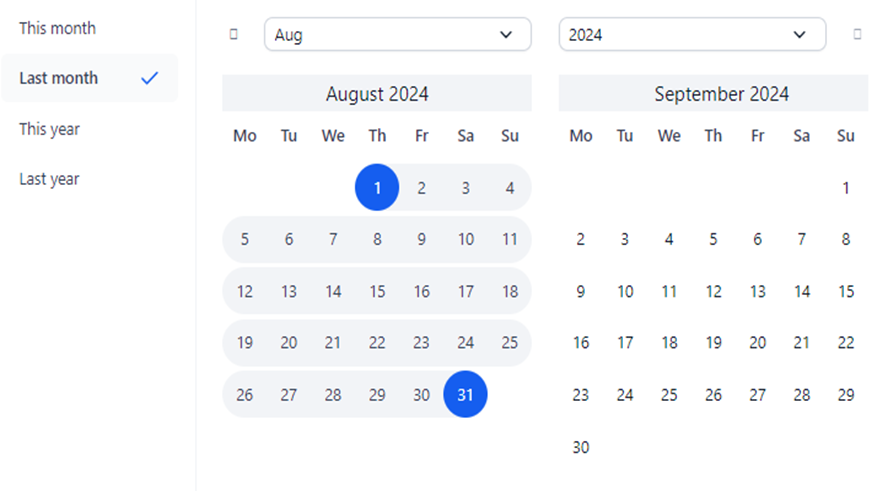
-
This Year: Displays data for the current year. For example, if today is 20 September 2024, the data from 1 January 2024 to 20 September is displayed. 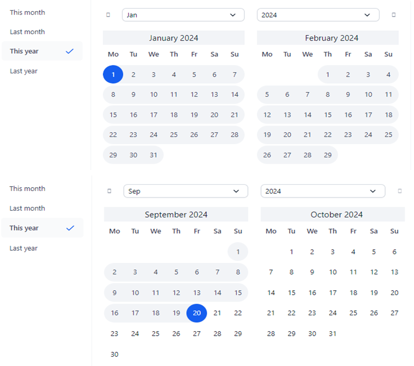
-
Last Year: Displays data for the previous year from 1 January 2023 to 31 December 2023. 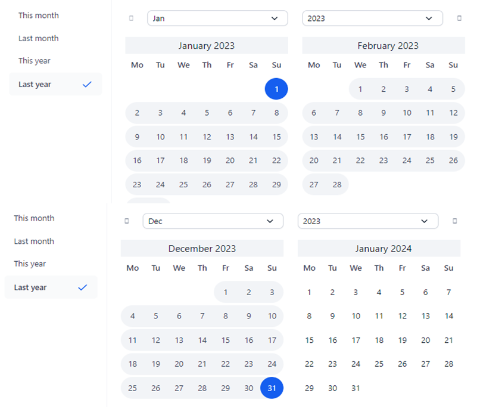
{kind=link}
{kind=link}
{kind=link}
{kind=link}
Agent Performance Filters¶
The following widget-level filters apply exclusively to agent-specific metrics, providing real-time analytics when used with a Global Timeline filter.
- Agent Name: Select the deployed agent from the list to see the associated analytics data.
Note
If two agents with the same name are deployed at different times, they appear in the list with their respective deployment timestamps.
- Agent Version: Choose the deployed agent’s version from the list. If your account contains multiple versions of the same agent, this feature provides targeted data for a specific version, such as testing or production.
Note
If no versions exist for an agent, the dropdown list is empty. By default, data for all agent versions is displayed unless a specific version is selected.
Agent Performance Data Widgets¶
The Agents Analytics dashboard displays the widgets mentioned below to represent the agent-specific performance metrics. The graphs update automatically when a different agent version is selected.
How it Works¶
- Select the required date/range in the global timeline filter.
- Select the Agent Name and (optional) Agent Version.
- The widgets display an hourly graph for 24 hours on a single day and a daily graph for the respective metrics for a date range.
Agent Runs¶
This widget features two dynamic graphs illustrating successful and failed requests executed by the agent during the selected period in the global timeline filter. The Y-axis represents the Total Number of Requests, while the X-axis indicates the Date.
Key Features
- Successful runs are displayed in green, while failed runs are shown in red.
- The Total Number of Requests (Y-axis) automatically scales to accommodate runs executed across different date selections.
- Hover over a data point on the success and failure line graphs to view the counts for Total Requests and the successful and failed requests executed by the agent at that specific date and time. For example, you can check the successful and unsuccessful request executions at 11:25 AM on January 16, 2024. 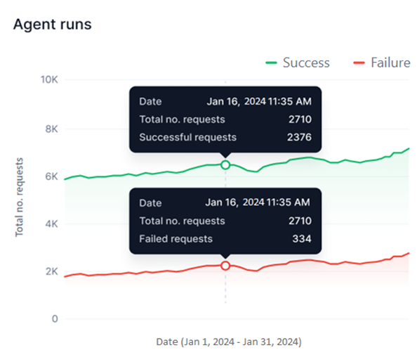
{kind=link}
Important
- The widget shows data only for the duration that the agent was deployed in your account. For instance, if Agent A was active for 4 days last week and undeployed for the next 3 days, selecting a 7-day view will display data solely for those 4 active days and the associated request times.
- The graph will show curves only when requests are processed by the agent. If no requests are processed during an hour or day, no data points will appear.
Best Practices
You can do the following to analyze agent performance:
- Performance Tracking: By viewing successful and failed requests, you can monitor the agent’s performance, identifying how often the agent completes tasks successfully versus when they fail for the same or different dates.
- Trend Analysis: Tracking agent runs across different periods provides insights into performance trends, identifying peak and low performance periods.
- Real-Time Monitoring: The widget allows you to monitor agent performance in real-time, enabling quick responses to sudden spikes in failures or performance drops.
- Comparative Assessment: Evaluate the performance of different agent versions to determine the most effective option.
Avg. Agent Response Time¶
This widget features a line graph illustrating the ART taken by the agent version to execute each request during the selected period in the global timeline filter. The Y-axis represents the Avg. Response Time, while the X-axis indicates the Date.
Key Features
- A blue line graph represents the Average Response Time (ART) values for the selected period. If a single day is selected, the graph displays hourly ART values, while selecting a date range represents daily ART values.
- The Avg. Response Time (Y-axis) automatically scales to accommodate real-time response times per request.
Best Practices
You can do the following to analyze agent performance:
Single Day
- View the average agent response time for each hourly request within a day. For instance, if the agent executes 100 requests between 12 PM and 1 PM, each with its own response time, the average of these values is represented by the graph line. Hover over the corresponding data point on the graph to view the ART for a specific hour. The tooltip shows the selected date & time, ART for the hour, and the no.of requests processed during that hour.
- View the overall ART, which is the total of the ART for all hours combined during the selected day.
{kind=link}
Date Range
-
View the ART of an agent for requests processed daily over the specified date range. For example, if you select the date range between September 1 and September 30, the ART for each day is combined to show the graph line. Hover over the corresponding data point on the graph to see the ART for a specific date and time. The tooltip shows the selected date, ART for the day, and the no.of requests processed on that date.
-
View the overall ART, which is the total of the ART for all days in the selected date range. 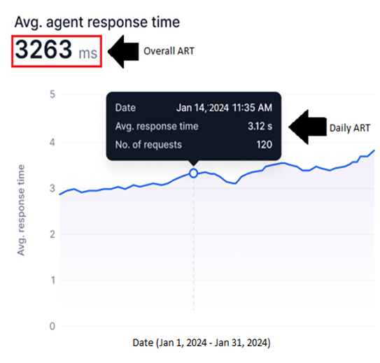
{kind=link}
Note
The system calculates the ART for all requests within each hour (hourly ART). It then combines the hourly ART for all hours daily to determine the Daily ART. Finally, the Daily ART values for the selected date range are aggregated to compute the overall ART.
Generic
- Performance Evaluation: ART helps assess how quickly the agent responds to requests during different periods, giving insights into overall efficiency.
- Bottleneck Identification: Sudden spikes in ART can highlight delays or inefficiencies, allowing for targeted troubleshooting.
- Optimization: Monitoring ART over time helps identify areas for improvement, leading to faster response times and optimized workflows.
- Trend Analysis: Tracking ART across different periods helps uncover patterns in agent performance, providing data-driven opportunities for enhancement.
- Comparative Assessment: Evaluate the performance of different agent versions to assess their response times to requests.
Nodes Execution¶
This widget displays a line graph showing the number of nodes (including all node types) executed for each event run during an agent flow for the selected agent version and period (as selected in the Global timeline filter. The Y-axis represents the Number of Nodes Executed, while the X-axis shows the Date.
Rate Limit
The Nodes Execution widget displays a graph up to your account's maximum subscribed rate limit, indicated by a red line. For example, if your subscription allows 8,000 node executions, the graph will show data for a maximum of 8,000 nodes during the selected period. Once this limit is reached, an error message will appear, notifying you that the threshold has been reached and no further node executions can occur.
{kind=link}
Key Features
- A blue line graph represents the node executions for the selected period. If a single day is selected, the graph displays hourly node executions, while selecting a date range represents daily node executions.
- The Number of Nodes Executed (Y-axis) is fixed and accommodates the maximum rate limit subscription.
- A red line highlights the maximum rate limit.
- Hover over the required data point on the graph to view the following information:
- Total Events: The number of node executions for the following nodes:
- Start Node
- GenAI Node
- Function Node
- Condition Node
- API Node
- End Node
Best Practices
- Performance Monitoring: Track the number of nodes executed during each agent flow, allowing you to assess the agent's overall performance.
- Resource Optimization: Visualizing node execution trends can help you identify inefficient workflows or overused nodes, optimize resources, and enhance efficiency.
- Rate Limit Tracking: The analysis allows you to monitor node execution in relation to your account’s rate limits, helping you stay within subscription thresholds.
- Troubleshooting: Nodes execution patterns can highlight potential issues or bottlenecks in your agent flows, making it easier to detect and resolve problems.
- Trend Analysis: By comparing node executions over time, you can identify performance trends and make data-driven decisions to improve agent flow and response times.
Expanded Widget View¶
You can expand any widget on the Agents Analytics Dashboard for a drill down view of analytics trends. Each expanded view enables you to apply widget-level filters, offering a focused analysis of agent performance for that widget.
The widget-level filters include the following:
Important
- Changes made to the filters in the expanded view of a widget do not affect the main dashboard or the global filters.
- Hover over the required data point to view widget analytics data.
To expand a widget, hover over the top-right corner of the widget, and click the Double-arrow icon.
{kind=link}
The expanded views of all the widgets are shown below:
Agent Runs
{kind=link}
Avg. Agent Response Time
{kind=link}
Nodes Execution
{kind=link}
The Agents Analysis Dashboard offers custom and actionable insights through the various features highlighted in this post to streamline agents’ performance in your account.
Related Information¶
- Settings Console- Learn more about other GALE admin features.
- Monitoring: Audit Logs- Track activities and events in your account.
- Monitoring: Model Analytics Dashboard- Get actionable insights into model-specific metrics and optimize performance.